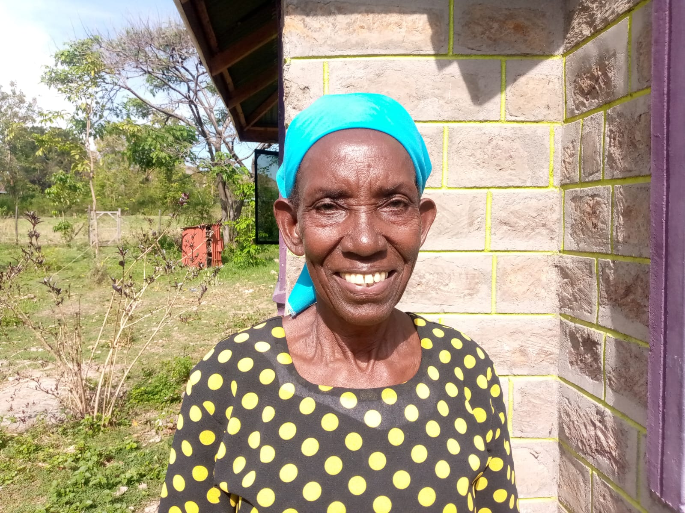
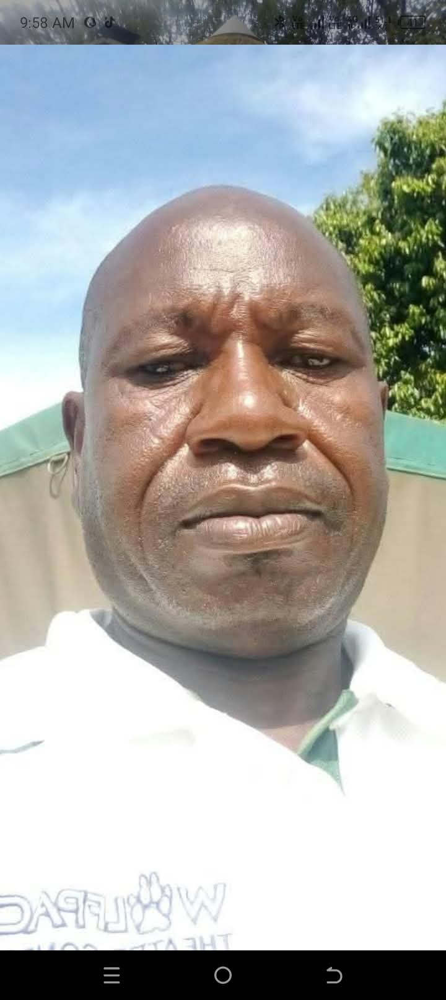
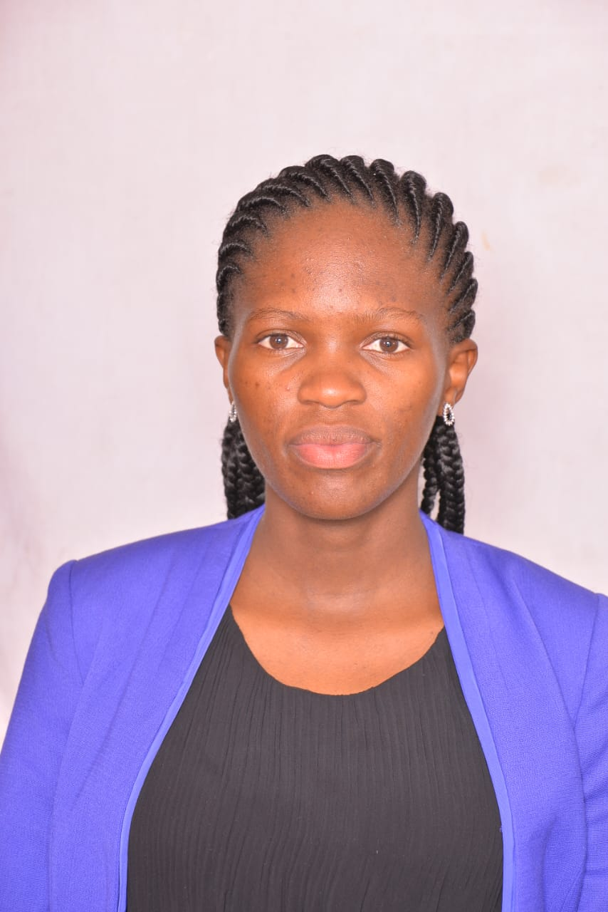
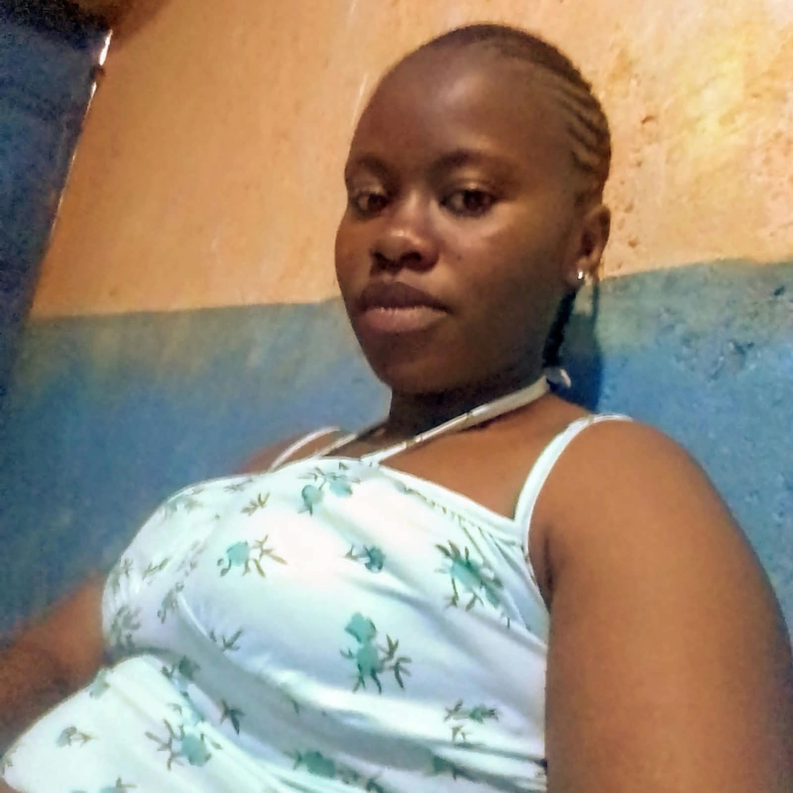
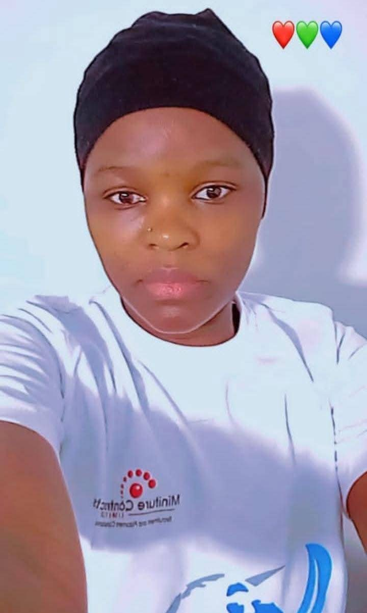
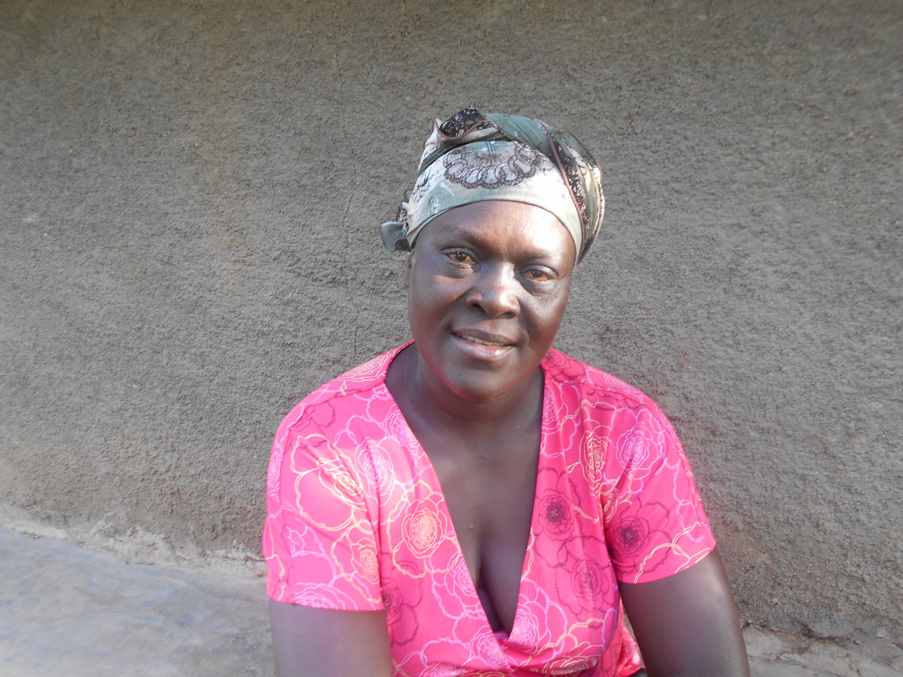
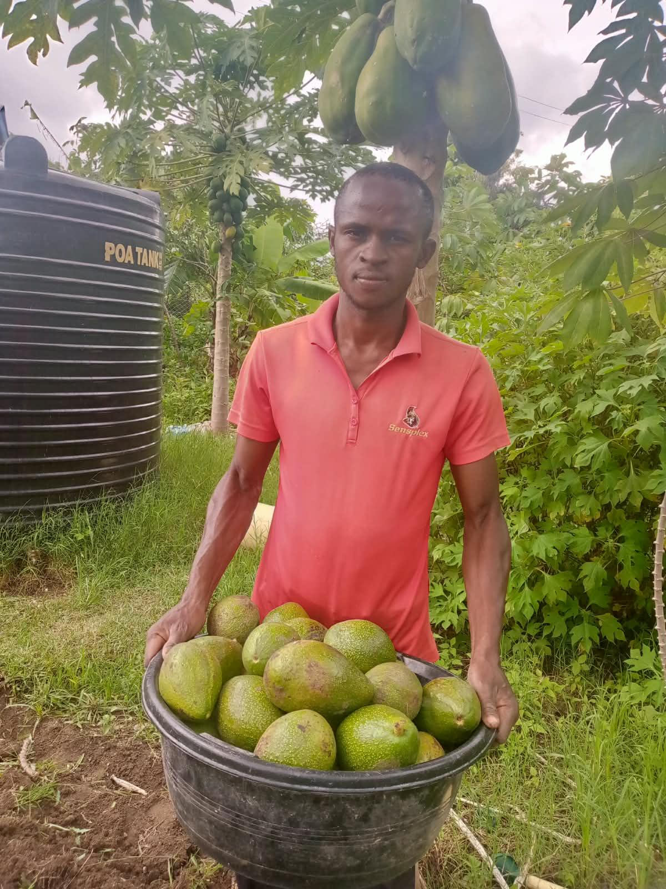

Meet Our Team
People united by a desire to see change, take part in change, and leave a lasting legacy through service, example and community action.
Leadership

Ramanus Abade
Director

Joseph Odoyo
Secretary

Kerina Colly
Treasurer

Julius Siembo
Coordinator
Members

Nadia Venessa

Linet Achieng

Margret Akinyi

Maurice Odede

Pauline Ogutu

Zaina Achieng

June Mercy

Grace Otieno

Volunteer · A story of transformation
Philip Otieno
Philip’s journey reflects what opportunity, encouragement and determination can make possible. Through KWEPU’s support, he received sponsorship that helped him pursue masonry training and develop a practical skill.
Today, Philip works as a mason and continues to volunteer his services to KWEPU—a meaningful way of giving back to the community that supported his growth.
His story is a reminder that empowerment is more than offering support: it is helping people build skills, independence and the confidence to become part of the change they want to see.
Become part of the change
KWEPU welcomes people who want to contribute their time, skills and ideas to community-led progress.
Join KWEPUContact us